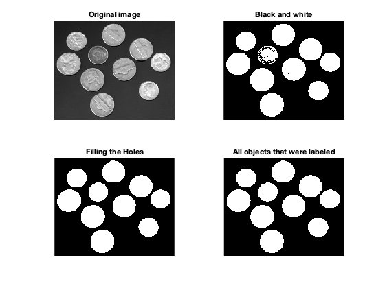
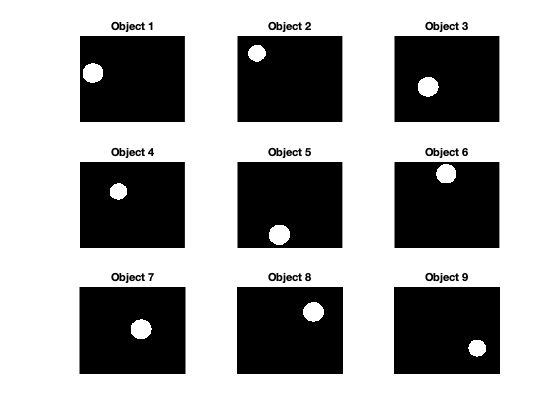
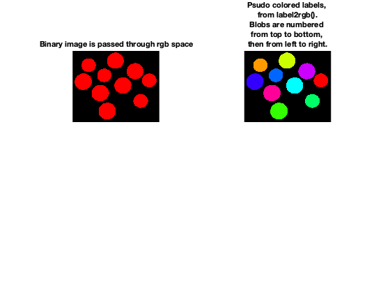
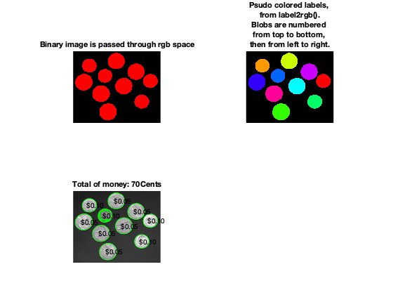

Contents
- COUNT COINS
- Convert the coin image
- Print the results
- Assign each blob a different color to visually show the distinct blobs.
- Get all the blob properties.
- Count the values
- Interesting observations
- Poor attempt at trying to transpose the image
- This idea wasn't nessesary. Fixed with im2bw().
- This idea is for dealing with color images
- Measure properties of image regions
- Counter
- Don't use / test only
- Labeling gone wrong...
clear all close all
COUNT COINS
Convert the coin image
When the image is read in it gets converted into a black and white transposed image and gets cleaned up with the imfill to eliminate any stand alone pixels. The label variable is set to automatically choose how to label the objects in the image. To ensure the label function is working correctly, im1 is set to equal the first image it lables as 1 not counting zero.
normalizedThresholdValue = 0.4; % In range 0 to 1. image = imread('coins.png'); image = mat2gray(image); binaryImage = im2bw(image, normalizedThresholdValue);% One way to threshold to binary %binaryImage = im2bw(image); cleanImage = imfill(binaryImage, 'holes'); label = bwlabel(cleanImage,8); logicalBW = logical(label); thresholdValue = normalizedThresholdValue * max(max(image)); % Gray Levels. %max(max(logicalLabel)); %im1 = (label==10);
Print the results
figure; subplot(2,2,1), imshow(image) title('Original image'); subplot(2,2,2), imshow(binaryImage) title('Black and white'); subplot(2,2,3), imshow(cleanImage) title('Filling the Holes'); subplot(2,2,4), imshow(label) title('All objects that were labeled'); % Print the entire array of images recorded at different positions. This % is displaying how bwlabel() organized the data. figure, subplot(3,3,1), imshow(label==1), title('Object 1'); subplot(3,3,2), imshow(label==2), title('Object 2'); subplot(3,3,3), imshow(label==3), title('Object 3'); subplot(3,3,4), imshow(label==4), title('Object 4'); subplot(3,3,5), imshow(label==5), title('Object 5'); subplot(3,3,6), imshow(label==6), title('Object 6'); subplot(3,3,7), imshow(label==7), title('Object 7'); subplot(3,3,8), imshow(label==8), title('Object 8'); subplot(3,3,9), imshow(label==9), title('Object 9'); 
Assign each blob a different color to visually show the distinct blobs.
clean = imfill(binaryImage, 'holes'); redLabels = label2rgb(clean, 'hsv', 'k', 'shuffle'); % pseudo random color labels colorLabels = label2rgb(label, 'hsv', 'k', 'shuffle'); %coloredLabels is an RGB image. figure, subplot(2,2,1); imshow(redLabels); title('Binary image is passed through rgb space'); subplot(2,2,2); imshow(colorLabels); axis image; % Make sure image is not artificially stretched because of screen's spect ratio. caption = sprintf('Psudo colored labels, \nfrom label2rgb().\nBlobs are numbered \nfrom top to bottom, \nthen from left to right.'); title(caption);
Get all the blob properties.
%logicalBW = logical(cleanBW); L = bwconncomp(clean); blobMeasurements = regionprops(L, 'all'); numberOfBlobs = size(blobMeasurements, 1); % bwboundaries() returns a cell array, where each cell contains the row/col % coordinates for an object in the image. Plot the borders of all the % coins on the original grayscale image using the coordinates returned by % bwboundaries. subplot (2,2,3); imshow(image); title('Outlines, from bwboundaries()'); axis image; % make sure image is not artificially stretched because of screen's aspect ratio. hold on; boundaries = bwboundaries(binaryImage); numberOfBoundaries = size(boundaries, 1); for k = 1 : numberOfBoundaries thisBoundary = boundaries{k}; plot(thisBoundary(:,2), thisBoundary(:,1), 'g', 'LineWidth', 1); end hold off; textFontSize = 14; labelShiftX = -7; blobECD = zeros(1, numberOfBlobs); % Print header line in the command window. fprintf(1, 'Blob # Mean Intensity Area Perim Centroid Diameter\n'); % Loop over all blobs printing their measurements to the command window. for k = 1 : numberOfBlobs % Loop through all blobs. % Find the mean of each blob. thisBlobsPixels = blobMeasurements(k).PixelIdxList; % Get list of pixels in current blob. meanGL = mean(image(thisBlobsPixels)); %Find mean intensity (in original image). blobArea = blobMeasurements(k).Area; %Get centroid one at a time blobPerimeter = blobMeasurements(k).Perimeter; % Get perimeter. blobCentroid = blobMeasurements(k).Centroid; % Get centroid one at a time blobECD(k) = sqrt(4 * blobArea /pi); %Compute Equivalent Circular Diameter. fprintf(1, '#%2d %17.1f %11.1f %8.1f %8.1f %8.1f %8.1f \n', k, meanGL, blobArea, blobPerimeter, blobCentroid, blobECD(k)); % Put the "blob number" labels on the "boundaries" grayscale image %text(blobCentroid(1) + labelShiftX, blobCentroid(2), num2str(k), 'FontSize', textFontSize, 'FontWeight', 'Bold'); end
Blob # Mean Intensity Area Perim Centroid Diameter # 1 0.7 2664.0 180.2 37.2 106.7 58.2 # 2 0.7 1870.0 150.8 56.1 49.8 48.8 # 3 0.6 2696.0 181.2 96.3 146.1 58.6 # 4 0.5 1824.0 148.3 110.1 84.9 48.2 # 5 0.7 2766.0 183.4 120.3 208.6 59.3 # 6 0.7 2538.0 175.6 148.6 34.4 56.8 # 7 0.6 2618.0 179.9 174.8 120.0 57.7 # 8 0.7 2568.0 177.3 216.9 70.8 57.2 # 9 0.8 1914.0 152.4 236.1 173.4 49.4 #10 0.8 1876.0 150.6 265.8 102.6 48.9
Count the values
coin = cleanImage; [L, Ne] = bwlabel(double(coin)); prop = regionprops(L,'Area','Centroid'); total=0; for n = 1:size(prop,1) cent=prop(n).Centroid; X=cent(1); Y=cent(2); if prop(n).Area>2000 text(X-10, Y, '$0.05') total=total+5; else total=total+10; text(X-10,Y,'$0.10') end end hold on title(['Total of money: ',num2str(total),'Cents'])
Interesting observations
This is an iteration I found that is able to separate the data between i and j. Then it is supposed to label every element according to its value based on its area measured in the image for each object. It did not behave as advertised however, the program does compile and it does return an image of one of the dimes captured in the image in figure 3. I perhaps made an error in translating the intended use however, I found the behavior useful. for j=1:max(max(label)) [row, col] = find(label==j); length = max(row)-min(row)+2; width=max(col)-min(col)+2; target=uint8(zeros([length width])); sy=min(col)-1; sx=min(row)-1; end
for i=1:size(row,1) x=row(i,1)-sx; y=col(i,1)-sy; target(x,y)= A(row(i,1), col(i,1)); end mytitle=strcat('Object Number:',num2str(j)); figure,imshow(target);title(mytitle);
Poor attempt at trying to transpose the image
%level = 0.5; % %figure, imshow(im1); %coinImage = rgb2gray(coinImage); % coinImage = double(coinImage); % % SH = [-1 -2 -1 % 0 0 0 % 1 2 1]; % % SV = [-1 0 1 % -1 0 1 % -1 0 1]; % % im2 = imfilter(coinImage, SH,'corr'); % figure, imshow(im2); % im3 = filter2(SV, coinImage); % figure, imshow(im3); % im4 = sqrt((im2.^2+im3.^2)/2); % imfill(im4); % BW = filter2(fspecial('sobel'),coinImage); % min_matrix = min(BW(:)); % max_matrix = max(BW(:)); % K = mat2gray(BW); % min_image = min(K(:)); % max_image = max(K(:)); %compliment = imcomplement(BW); % [numrows, numcols] = size(coinImage); % resizeIm = imresize(coinImage, [255 255]); % adjIm = imadjust(resizeIm,[0.3 0.7],[]); % im = double(adjIm); % mx = max(max(adjIm)); % mn = min(min(adjIm)); % im2 = (adjIm - mn) ./ (mx - mn) * 255; % BW = rgb2gray(adjIm); %negativeImage = 127.5 - BW; %edge(BW) %figure, imshow(im4); %noiseFix = filter2(fspecial('average'),BW)/200; % K-average %noiseFix = medfilt2(BW); %fix = imadjust(BW, [0.7 0.9], []); %imcomplement(noiseFix) %coin1 = imbinarize(noiseFix, level);%(BW, level); %T=0.1; %edgeDetect = edge(coin1,'Prewitt'); %imfill(coin1); %imshow(edgeDetect);
This idea wasn't nessesary. Fixed with im2bw().
Fill image regions and holes
%coin2 = imfill(coin1, 'holes'); % %% Label and count connected components % coin2 = logical([1 1 1 0 0 0 0 0 % 1 1 1 0 1 1 0 0 % 1 1 1 0 1 1 0 0 % 1 1 1 0 0 0 1 0 % 1 1 1 0 0 0 1 0 % 1 1 1 0 0 0 1 0 % 1 1 1 0 0 1 1 0 % 1 1 1 0 0 0 0 0]); % L = bwlabel(coin2,4); % [r,c] = find(L == 2); % [L, NUM] = bwlabel(double(coin2)); %figure, imshowpair(coinImage,coin2, 'montage'); %figure, imhist(coin1);
This idea is for dealing with color images
%Pre-process the RGB Color space % rmat = fix(:,:,1); % gmat = fix(:,:,1); % bmat = fix(:,:,3); % levelr = 0.63; % levelg = 0.5; % levelb = 0.4; % i1 = im2bw(rmat, levelr); % i2 = im2bw(gmat, levelb); % i3 = im2bw(bmat, levelb); % Isum = (i1&i2&i3); % figure; % subplot(2,2,1), imshow(i1)%(rmat); % title('Red Plane'); % subplot(2,2,2), imshow(i2)%(gmat); % title('Green Plane'); % subplot(2,2,3), imshow(i3)%(bmat); % title('Blue Plane'); % subplot(2,2,4), imshow(Isum)%(coinImage); % title('Sum of all planes');%('Original Image'); %imadjust( % Icomp = imcomplement(Isum); % Ifilled = imfill(Icomp, 'holes'); % figure, imshow(Ifilled); % %% % se = strel('disk',250); % Iopenned = imopen(Ifilled,se); % imshow(Iopenned);
Measure properties of image regions
%prop = regionprops(L, 'Area','Centroid');
Counter
%total = 0;
Don't use / test only
Show image
%imshow(imread('coins.png')); hold on
Labeling gone wrong...
for n = 1:size(prop,1) %For 1 to Tatal number of coins cent = prop(n).Centroid; X = cent(1); Y = cent(2); if prop(n).Area > 2000 text(X-10,Y,'5 C') total = total+5; else total =total+10; text(X-10,Y,'10 C') end end hold on